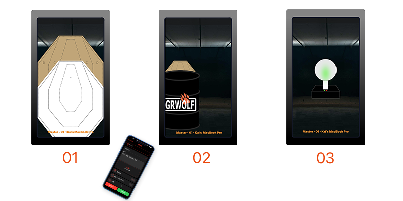
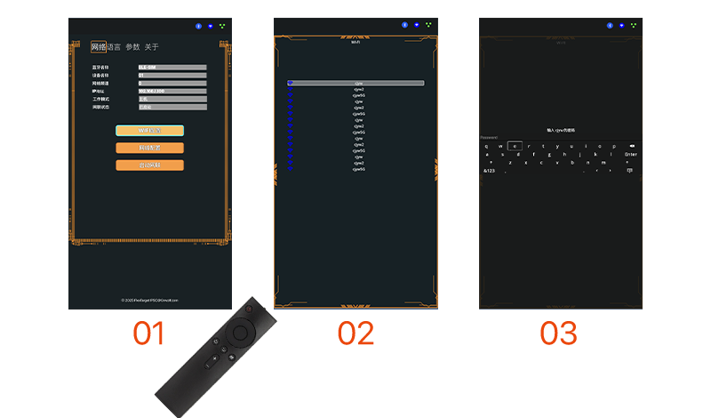
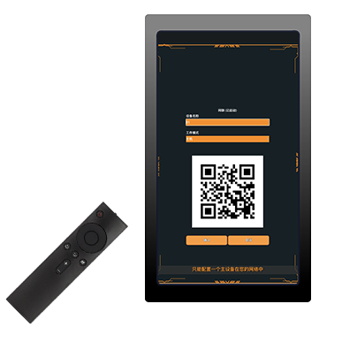
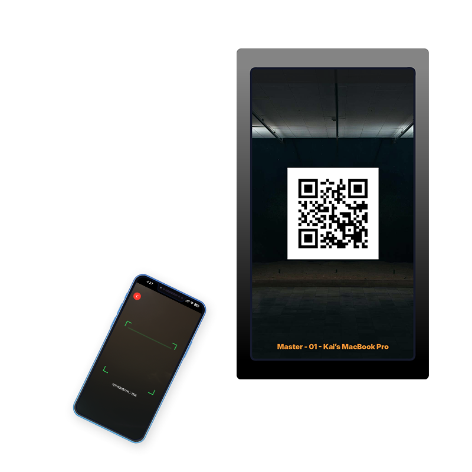
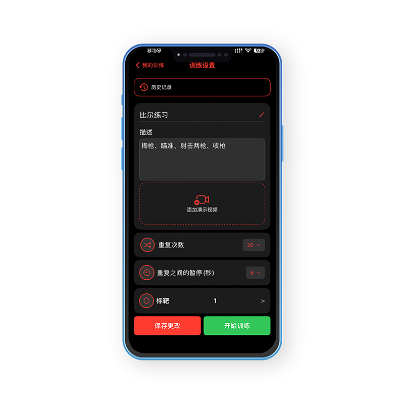
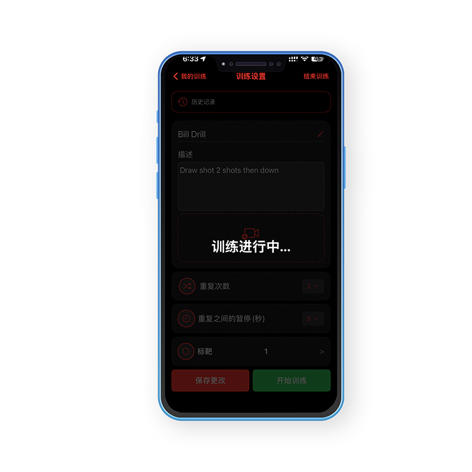
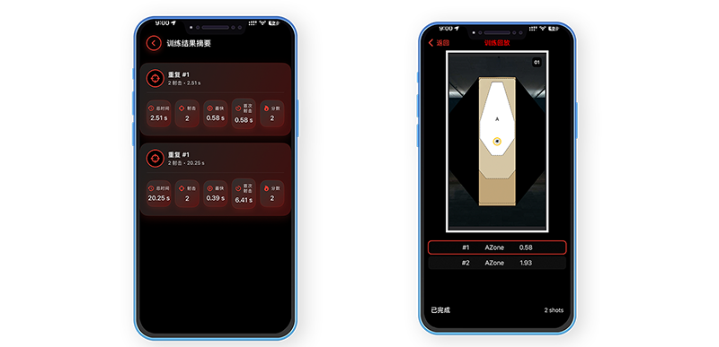

Use Netlink to customize drills with your targets and mobile app—for example, 20 repetitions of a Bill Drill with 4-second pauses, or multiple targets for movement shooting drills. Follow these steps to configure Netlink.
Use the remote control to navigate to Options > Network tab. Select the Wi-Fi button, search for your network, and enter the password to connect.
Enter a Target Name and set the working mode to either Master or Slave. Note: There must be exactly one Master in the network.
Open the FlexTarget Mobile App and scan the QR code to connect to the Master device.
Use the mobile app to set up the drill: add a description, select targets, set repetition count, and configure pause time between repetitions.
Press the Start button to begin the drill.
Review drill results including summary statistics and detailed performance data.
